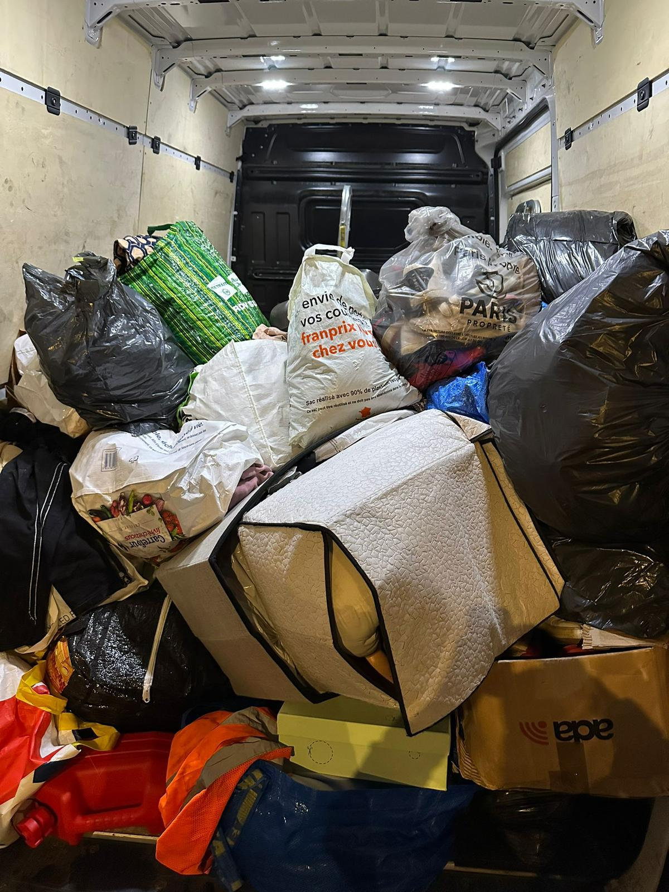
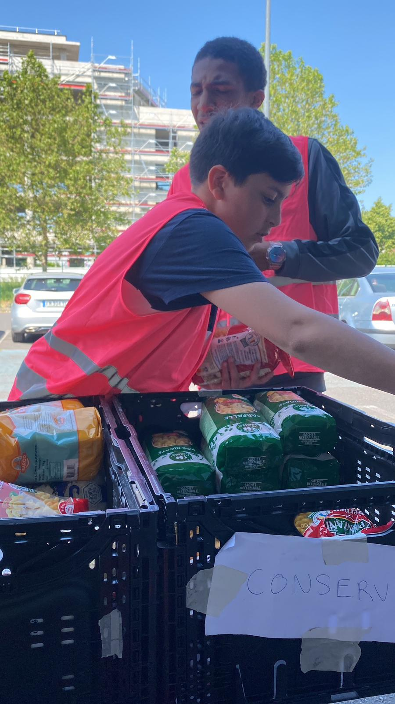
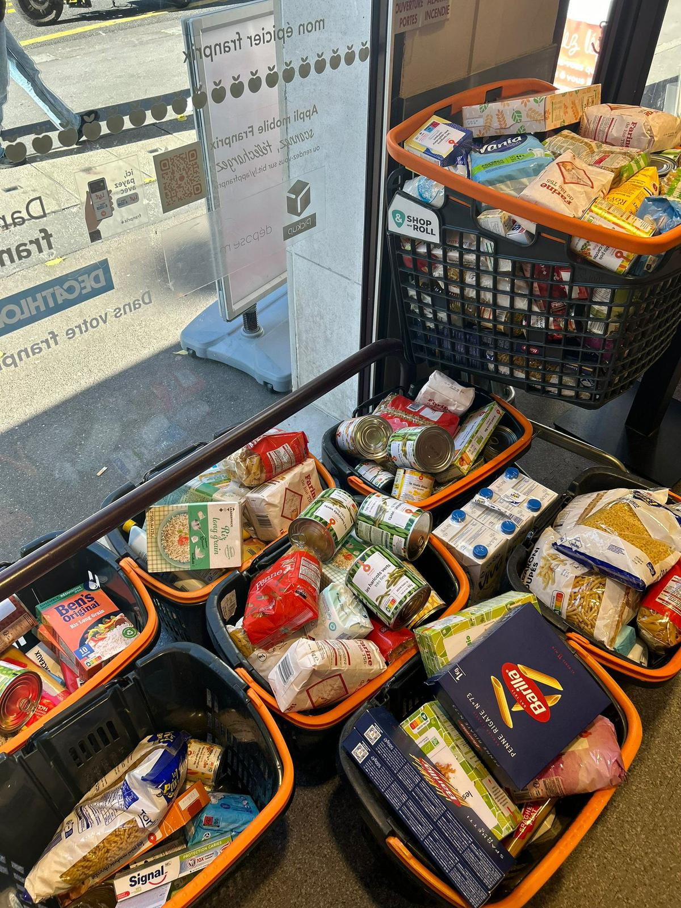

🤲 Pôle Solidaire
"Agir avec cœur, ici et ailleurs"
Le pôle solidaire d’Oxyjeunes est le reflet de notre engagement envers les plus démunis, que ce soit dans notre quartier ou au-delà des frontières. À travers lui, nous affirmons que la solidarité ne connaît ni âge, ni frontières, et que la jeunesse peut porter des élans de générosité puissants.
Nos actions principales
- Maraudes régulières : nous allons à la rencontre des personnes sans-abri pour leur apporter repas, chaleur et écoute.
- Collectes alimentaires et vestimentaires, avec l’aide des habitants du quartier.
- Projet solidaire international : en 2023, nous avons mené une mission au Mali, en Mauritanie et au Sénégal, pour soutenir des projets locaux avec du matériel et des actions de terrain.
- Opération Mayotte : nous avons organisé une récolte de dons exceptionnelle pour venir en aide aux familles en difficulté à Mayotte, qui nous a permis d’acheminer un camion entier rempli de vêtements, produits de première nécessité et matériel.
Nos actions, en images



Nos objectifs
- Encourager une jeunesse active, généreuse et consciente des réalités sociales.
- Renforcer la culture du don, de l’entraide et du bénévolat.
- Agir avec dignité, respect et efficacité, ici comme ailleurs.